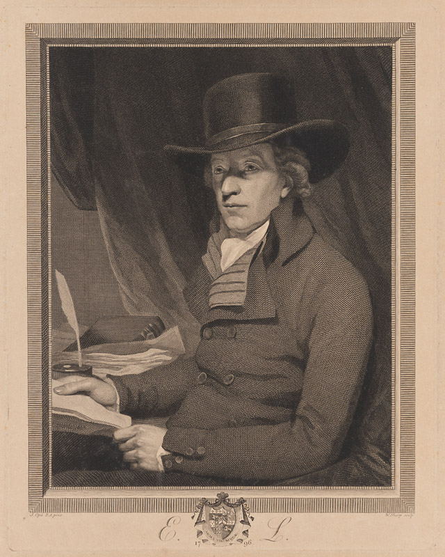
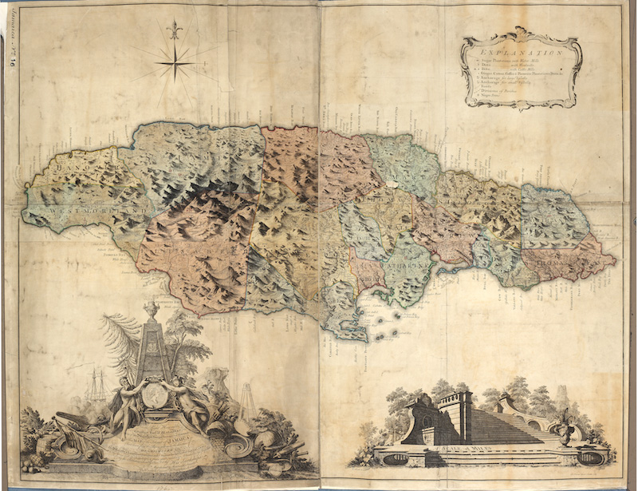
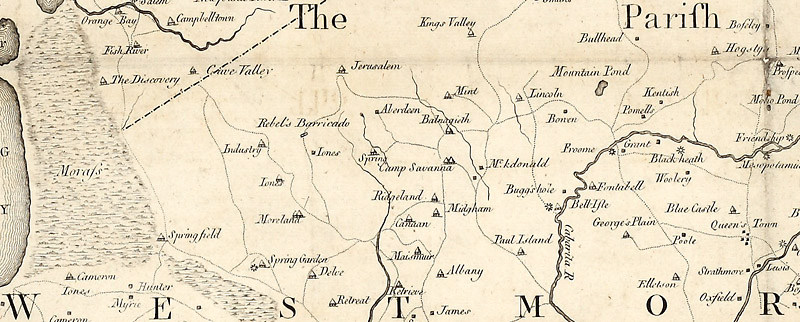
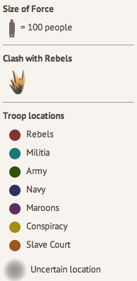
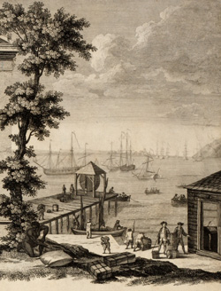
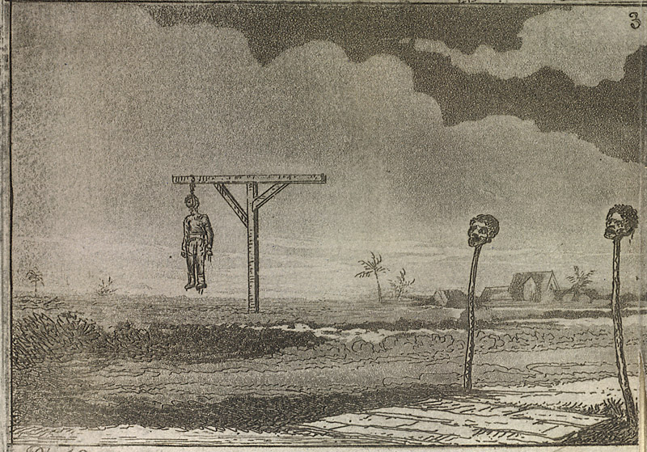

Contents
The Revolt

In 1760, some fifteen hundred enslaved black men and women— perhaps fewer but probably many more— took advantage of Britain’s Seven Year’s War against France and Spain, to stage a massive uprising in Jamaica, which began on April 7 in the windward parish of St. Mary’s and continued in the leeward parishes until October of the next year. Over the course of eighteen months the rebels killed as many as sixty whites and destroyed many thousands of pounds worth of property. During the suppression of the revolt over five hundred black men and women were killed in battle, executed, or committed suicide. Another 500 were transported from the island for life. Colonists valued the total cost to the island at nearly a quarter of a million pounds. “Whether we consider the extent and secrecy of its plan, the multitude of the conspirators, and the difficulty of opposing its eruptions in such a variety of places at once,” wrote planter-historian Edward Long in his 1774 History of Jamaica, this revolt was “more formidable than any hitherto known in the West Indies.”[1]
Long was convinced that the rebellion was the culmination of an island-wide plot by Coromantee compatriots from the Gold Coast of West Africa who hoped to conquer the colony and create a series of principalities “in the African mode.” Yet his and subsequent historical accounts have left a number of important questions unanswered. Was the revolt a unified and coordinated affair, or was it instead a series of opportunistic riots? What in fact did the rebels hope to achieve? Was there ever a real danger to the British Empire in America or was the threat blown out of proportion by panicked whites? If the insurrection was as well planned as the colonists feared, why didn’t it succeed? These questions can be partially addressed by examining how the insurrection played out in space.
What the Map Shows
Mapping the revolt and its suppression illustrates something that is difficult to glean from simply reading the textual sources. The colonists and imperial officials who produced the historical record were universally unsympathetic to the rebellion, and we have no documents produced by the rebels. So the written record skews our understanding toward the insights, fears, hopes, and desires of slaveholders. But we learn something else by plotting the combatants’ movements in space. Tracing their locations over time, it is possible to discern some of their strategic aims and to observe the tactical dynamics of slave insurrection and counter-revolt.
The uprising encompassed three major phases of sustained action— discounting the various conspiracies discovered by the whites— alongside more dispersed and sporadic skirmishes. The first was the revolt in St. Mary’s, generally named Tacky’s Revolt after one of its principal African leaders. This was followed by a much bigger revolt in Westmoreland parish. Finally, survivors of the Westmoreland insurrection trekked across two parishes, raiding estates along the way. These campaigns adapted to geographical constraints. On the windward side of the island— the north side— heavy rainfall and dense vegetation limited movement more than on the leeward side, where the drier climate allowed for greater mobility. Still, within each phase of the rebellion, the routes traveled by the rebels through woods, mountains, hills, swamps, and rivers indicated strategic objectives.
St. Mary's Revolt, April 8, 1760
The initial revolt in St. Mary’s parish targeted the British fort at Port Maria. At Fort Haldane insurgents gathered arms and ammunition before marching up the main road to the heads of the parish’s most important waterways, which fed Port Maria Bay and Annotto Bay, principal strategic ports on the island’s north side. From there, fleeing the imperial counterattack, the rebels broke into small bands and traversed the area’s deep woods and ravines, conducting raids all the way down to the coastal inlets. The objective in St. Mary’s, then, seems then to have been control of the commercial zone along the rivers, which lends some credence to Long’s suggestion that the insurgents hoped to conduct trade on their own account, perhaps even keeping the plantations geared to the production of exports.
Westmoreland Revolt, May 26, 1760
On May 25, not long after the suppression of the uprising in St. Mary’s parish, and just before Lt. Governor Henry Moore was to declare the suspension of martial law, the revolt broke out in Westmoreland parish. Colonists and imperial officials believed that the Westmoreland and St. Mary’s uprisings were connected. According to the Jamaica squadron commander, Rear Admiral Charles Holmes, “the whole Island remained in great Terror and Consternation for some time, having had more Evidence than before of their Disobedience & Revolt being intended to be universal.”[2]
Certainly, the Westmoreland revolt was anything but haphazard. On the map, we can see how the rebels selected a small and detached mountain range, presumed to be defensible from both planters and their maroon allies. Uprisings occurred on estates all around the base of this range, indicating a shared strategic focus arising from a network of communication and planning that ran through the mountains. It is plausible to assume from the location of the rebel encampment and the presence there of many women and children that the rebels hoped to build an enduring society, perhaps another maroon village free of the direct control by the British.
Simon's March, September 1760
Following the defeat and dispersal of the encampment in early June, the map highlights a long rebel march that continued for months, ultimately extending as far as the parish of Clarendon. Topography was crucial to this phase of the revolt. The rebels kept to an elevation that remained within a fairly precise scope between the colonists’ estates on the plains and the steep mountains commanded by the maroons. Trekking through the foothills, into swamps, and to other detached peaks, the insurgents could strike estates and then melt back into wilderness. Their cartographic traces show how movement expressed political intention.
May 30, 1760
This map also highlights the geography of British counterinsurgency. Reaction to slave insurrection followed a fairly clear pattern. First, militia units composed of white men from the surrounding plantations confronted the rebels, often with poor success. At the same time, white women, children, and elders fled the estates for the port towns, where they huddled in fear. The countryside then became a militarized free-fire zone where any black person who seemed suspicious could be taken, tortured, or killed on sight. As soon as he received word of the uprising Lieutenant Governor Henry Moore declared martial law and mobilized the formal counterinsurgency: the army, who were much more effective than the militia at traveling long distances in fighting formation and in fighting set-piece battles; the navy, which conducted relief and resupply efforts while lending sailors to engagements on land; and the maroons, who excelled at pursuing rebels through dense forest and mountains. The militia, sticking close to the plantations, continued to skirmish with the bands of rebels that had survived major engagements.
Viewed on the map, the insurrection appears to have been the product of genuine strategic intelligence, one that utilized Jamaica’s distinctive geography and aimed toward the creation of alternative enduring societies. Recognizing a real threat to the maintenance of the colony, the British mounted a rapid and diversified response, drawing upon the highly coordinated efforts of the regular military, the haphazard and decentralized tactics of the local militia, and the rough-terrain warfare of maroon allies, each of which traversed the landscape in distinctive ways. The interpretive focus of this story emerges from its visual design.
Design
Four elements provide the principal content of the narration: the base map, the locational database, the symbol design, and the interface.
The Maps
First, several eighteenth-century maps were adapted to create the Terrain Map and the Estate Map, which form the base maps for the narration. The historical maps—a topographical view of the entire island and three separate maps of Cornwall, Middlesex, and Surrey counties— were printed in 1763 for Henry Moore, who, as Lieutenant Governor of Jamaica in 1756-61, was responsible for suppressing the insurrection. Drawn from surveys conducted by engineer Thomas Craskell and surveyor James Simpson, these maps show both the mountainous topography of the island and the placement of estates. Most interestingly, the map for Westmoreland marks the location of the “Rebel’s Barricade,” where the rebels built a fortified encampment and repulsed an attack by the militia before succumbing to a combined force of militia, soldiers, sailors, and maroons.[3] The base maps were geo-referenced to give rough latitudes and longitudes, so that movements gleaned from a locational database could be plotted as points on the graticule.

Symbology
Second, the thematic map graphically depicts a chronological database of locations. Contemporary accounts of the revolt— drawn from diaries, letters, military correspondence, newspapers, and retrospective accounts like those written by planter-historians Edward Long and Bryan Edwards— yielded descriptions of the positions, movements, and engagements of rebels and counterinsurgents. These locations were cross-referenced with multiple sources wherever possible; latitudes and longitudes were then reckoned by correlating the base maps with satellite images so the information could be plotted as points. The database also records numerical values where they accompanied reports of rebel forces, and killings and captures.
The third major element of the exhibit is the symbol design. A simple color scheme differentiates the fighting units, with icons for conspiracies, clashes, and judicial executions. Fading tracer lines track the movement of units. It was challenging to account for the uncertainty of much of the data. Symbols such as pushpins inappropriately signified too much clarity. Blurred circles were confusing. Solid lines tracking movement did not reflect the nature of guerilla warfare, in which rebels dispersed over the landscape in loose formations and their pursuers hunted rumors and chance sightings. Yet without traces between the points, it became difficult for the map to suggest that the movements were directional. The graphics attempt to balance intelligibility with uncertainty, while maintaining viewers’ sense of the interpretive character of the database.
The interface allows users to navigate the timeline of the revolt. The color tones and typefaces were chosen to evoke a sense of the period. On the left side of the screen, quotations from contemporaneous documents provide sourcing and context for the movements shown on the map. A simple legend is accessible beneath the quotations. The map can be animated to provide an overview of the rebellion or played step by step, which allows closer inspection of the data. The overall goal of the interface is to convey an understanding of the tactical and strategic movements that shaped the events of the insurrection.
Uncertainty
There are obvious limitations to plotting a turbulent slave revolt on a map like this. By using British maps that highlight the placement of forts, towns, and estates, our maps tend to reify colonial geography. Even more fundamentally, cartography presumes the natural existence of points on a grid much as history naturalizes the timeline, though these are ultimately folkways for representing space and time that have more in common with slaveholders’ epistemes than with those of their slaves. The spatial schemas of the rebels, their landmarks and pathways, and their sense of temporality are probably irretrievable in cartographic form.
Maps orient viewers by offering an orderly aerial view. But gazing down from a great height makes it hard to see chaos and confusion, the most essential features of a protracted insurgency. Indeed the sources used to locate the events of the revolt are themselves artifacts of desperate attempts to make sense of a fast-changing and bewildering predicament. A crucial source, the April 14, 1760, “Letter from a Gentleman at St. Mary”— almost certainly written by Zachary Bayly, who played a key role in organizing the militia’s response to the initial outbreak— begins with a disclaimer: “I am informed you have received several erroneous and contradictory Accounts of the proceedings of the rebellious Negroes; which I am not surprized at, as the Truth is difficult to come at here on the Spot. The following is the best information I can give you. ”[4] This map represents such imperfect efforts to grasp the way the rebellion unfolded, which are only shadows of the actual insurrection.
Of course, if this limitation arises from the sources, it also reflects the nature of guerilla warfare. Uncertainty was the rebels’ best weapon. They stood a chance of success only when they could surprise and confuse imperial forces. As a frustrated Admiral Holmes lamented, “Experience has proved that it is much easier to Vanquish & Rout them in the Field, or in a Collective Body Entrenched, than to Grab them out of the Woods.”[5] The implication for cartography is clear: rebel movements are extremely difficult to map for the periods when they were dispersed or hidden from the view of the counterinsurgency.
Nonetheless, concurring reports of the same activities allow for more confident narration. Readers may compare the multiple contemporary descriptions of major episodes like the battle at the rocky gully near Downes’s Cove, described by the “Letter from a Gentleman at St. Mary’s” and by Edward Long; or, of the battle at the Rebel’s Barricade (June 2, 1760), described in several accounts, to determine how descriptions of events vary and change over time. Readers should be aware that the earliest descriptions are not necessarily the most accurate. In chaotic events of this kind, the reverse is just as often true; accurate sequences of events are only known in time. Thus the portrayals by Edward Long and Bryan Edwards can be understood as products of careful investigation, even if they also probably indulged in some retrospective myth making.
Quantitative information reported by the sources must be taken as impressionistic. Numerical tallies often conflicted, highlighting the fact that uncertainty suffused the entire episode. Like words, numbers produced during the chaotic and disorienting events were the products of aspiration, fear, and rumor. For example, the military report compiled by Lt. Gov. Henry Moore and conveyed to the UK by Admiral Charles Holmes lists seventy-five rebels killed at the June 2 assault on the rebel’s encampment, while a resident of St. Elizabeth parish, reporting news from a man who took part in the attack, claims that the rebels had been reduced from twelve hundred to “not above 400.” The precise numbers here are not as relevant as the general sense of the event: “They Killed them with great Slaughter & the Prisoners they took, they hanged up without ceremony or Judge or Jury,” hoping to “leave a Terrour on the Minds of all the other Negros for the future.”[6]
Summary
Mapping the great Jamaican insurrection of 1760-61 allows us to see how the island’s topography shaped the course of the revolt, how the rebellion included at least three major uprisings, and how its suppression required the sequenced collaboration of several distinct elements of British military power. From the cartographic evidence, it appears that the insurrection was in fact a well-planned affair that posed a genuine strategic threat, checked ultimately by an effective counterinsurgency. Yet if the map draws a clearer picture of the extent and contours of the insurrection, it cannot convey the ambition, hope, desperation, shock, dread, alarm, cruelty, bloodlust, and sheer mayhem of the experience. These are matters left to the historical imagination of viewers and readers.
Notes
1 For eighteenth-century histories of the war and its aftermath see Edward Long, History of Jamaica, II (London, 1774), 447-472, quotation on 462; Bryan Edwards, History of the West Indies, II (London, 1793), 75-79.
2 Holmes to Cleveland, 11 June 1760, TNA, ADM 1/236, f. 41.
3 Map of the Island of Jamaica, 1763, TNA, CO 700/JAMAICA16; Map of the County of Cornwall, 1763, TNA, CO 700/JAMAICA17; Map of the County of Middlesex, 1763, TNA, CO 700/JAMAICA18; Map of the County of Surrey, 1763, TNA CO 700/JAMAICA19.
4 Extract of a Letter from a Gentleman at St. Mary, April 14, 1760,” The Pennsylvania Gazette, June 5, 1760.
5 Holmes to Cleveland, 25 July 1760, TNA, ADM 1/236, f. 53.
6 John Hamilton to Robert Hamilton, 12 June 1760, Ayrshire Record Office, AA/DC/17/113.